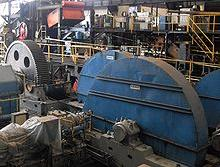
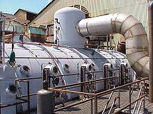

Condiciones ideales:
Clima
La temperatura, la humedad y la luminosidad, son los principales factores del clima que controlan el desarrollo de la caña. La caña de azúcar es una planta tropical que se desarrolla mejor en lugares calientes y soleados. Cuando prevalecen temperaturas altas la caña de azúcar alcanza un gran crecimiento vegetativo y bajo estas condiciones la fotosíntesis se desplaza, hacia la producción de carbohidratos de alto peso molecular, como la celulosa y otras materias que constituyen el follaje y el soporte fibroso del tallo. Es indispensable también proporcionar una adecuada cantidad de agua a la caña durante su desarrollo, para que permita la absorción, transporte y asimilación de los nutrientes. La caña de azúcar se cultiva con éxito en la mayoría de suelos, estos deben contener materia orgnánica y presentar buen drenaje tanto externo como interno y que su PH oscile entre 5.5 a 7.8 para su óptimo desarrollo. Se reportan buenos resultados de rendimiento y de azúcar en suelo de textura franco limoso y franco arenoso.
Siembra
Se reproduce por trozos de tallo, se recomienda que la siembra se realice de Este a Oeste para lograr una mayor captación de luz solar. El material de siembra debe ser de preferencia de cultivos sanos y vigorosos, con una edad de seis a nueve meses, se recomienda utilizar la parte media del tallo, se deben utilizar preferentemente esquejes con 3 yemas. El tapado de la semilla se puede realizar de tres formas: manualmente utilizando azadón, con tracción animal ó mecánicamente. La profundidad de siembra oscila entre 20 a 25 cm, con una distancia entre surco de 1.30 a 1.50 m. La semilla debe de quedar cubierta con 5 cm de suelo, el espesor de la tierra que se aplica para tapar la semilla no sólo influencia la germinación y el establecimiento de la población, sino también el desarrollo temprano de las plantas.
Cosecha
La faena de la recolección se lleva a cabo entre los once y los dieciséis meses de la plantación, es decir, cuando los tallos dejan de desarrollarse, las hojas se marchitan y caen y la corteza de la capa se vuelve quebradiza. Se quema la plantación para eliminar las malezas que impiden el corte de la caña. Aunque se han ensayado con cierto éxito varias máquinas de cortar caña, la mayor parte de la zafra o recolección sigue hacióndose a mano. El instrumento usado para cortarla suele ser un machete grande de acero con hoja de unos 50 cm de longitud y 13 cm de anchura, un pequeño gancho en la parte posterior y empuñadura de madera. La caña se abate cerca del suelo y se corta por el extremo superior, cerca del último nudo maduro, ya cortadas se apilan a lo largo del campo, de donde se recogen a mano o a máquina para su transporte al Ingenio, que es un molino en el cual se trituran los tallos y se les extrae el azúcar. El azúcar se consigue triturando los tallos y maceran con poderosos rodillos estriados de hierro y se someten, simultáneamente, a la acción del agua para diluir el jugo ya que contiene alrededor del 90% de sacarosa existente en la caña. El jugo se trata con cal y se calienta para que se precipiten las impurezas; se concentra luego por evaporación y se hierve para que cristalice. Posteriormente se dejan enfriar los cristales y se refina la melaza: se disuelve en agua caliente y se hace pasar a través de columnas de carbón gracias a lo cual los cristales se decoloran.

Proceso de producción:
Transporte de la caña de azúcar
La caña que llega a la fábrica se transporta, se pesa y luego se descarga sobre las mesas de alimentación con grúas.
Molienda
 La caña es sometida a un proceso de preparación que consiste en romper las celdas de los tallos. Luego unas bandas transportadoras la conducen a los molinos, donde se realiza el proceso de extracción de la sacarosa. El bagazo sale del último molino hacia las chimeneas, para usarlo como combustible, o al depósito de bagazo, de donde se despacha para usarlo como materia prima en la elaboración de papel.
Clarificación
El jugo proveniente de los molinos, pasa al tanque, donde se rebaja su grado de acidez. El jugo alcalinizado se bombea a los calentadores, donde se eleva su temperatura hasta un nivel cercano al punto de ebullición. En los que se sedimentan y decantan los sólidos. Los sólidos decantados pasan a los filtros rotatorios, los cuales están recubiertos con finas mallas metálicas que dejan pasar el jugo, pero retienen la cachaza, que puede ser usada como abono en las plantaciones.
Cristalización
El cocimiento de la sacarosa que contiene el jarabe se lleva a cabo en tachos al vacío. Estos cocimientos, producirán azúcar crudo (para producción para animales), azúcar blanco (para consumo directo) o azúcar para refinación. La cristalización del azúcar es un proceso demorado que industrialmente se aumenta introduciendo al tacho unos granos de polvillo de azúcar finamente molido.
Separación o centrifugación

Los cristales de azúcar se separan de la miel restante en las centrífugas. Estas son cilindros de malla muy fina que giran a gran velocidad. El líquido sale por la malla y los cristales quedan en el cilindro, luego se lava con agua. Las mieles vuelven a los tachos, o bien se utilizan como materia prima para la producción de alcohol etílico en la destilería. El azúcar de primera calidad retenido en las mallas de las centrífugas, se disuelve con agua caliente y se envía a la refinería, para continuar el proceso. Cabe resaltar que en este punto se obtiene lo que se llama azúcar rubio, debido al color de los cristales; a continuación se detalla el proceso mediante el cual el azúcar rubio se convierte en azúcar blanco o azúcar refinado.
Refinado
Mediante la refinación, se eliminan los colorantes o inorgnánicas que el licor pueda contener. El azúcar disuelto se trata con ácido y sacarato de calcio para formar un compuesto que arrastra las impurezas, las cuales se retiran fácilmente en el clarificador. El licor resultante se concentra, se cristaliza de nuevo en un tacho y se pasa a las centrífugas, para eliminar el jarabe.
Secado
El azúcar refinado se lava con condensado de vapor, se seca con aire caliente, se clasifica según el tamaño del cristal y se almacena en silos para su posterior empaque.
Envasado
El azúcar crudo de exportación sale directamente de las centrífugas a los silos de almacenamiento. Allí se carga a granel en las tractomulas que lo llevarán al puerto de embarque o bien se empaca en sacos de 50 kg para ser utilizado en la fabricación de alimentos concentrados para animales. El azúcar refinado se empaca en presentación de 5, 500, 1000 y 2500 gramos; 50 y 100 kilogramos e incluso por toneladas.